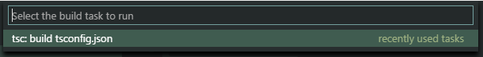

Editing TypeScript
TypeScript is a typed superset of JavaScript that compiles to plain JavaScript. It offers classes, modules, and interfaces to help you build robust components. The TypeScript language specification can be found here.

Installing the TypeScript compiler
Visual Studio Code includes TypeScript language support but
does not include the TypeScript compiler, tsc.
You will need to install the TypeScript compiler either
globally or in your workspace to transpile TypeScript source
code to JavaScript (tsc HelloWorld.ts).
The easiest way to install TypeScript is through npm, the
Node.js Package Manager.
If you have npm installed, you can install TypeScript globally
(-g) on your computer by:
npm install -g typescript
You can test your install by checking the version or help.
tsc --version
tsc --help
Another option is to install the TypeScript compiler locally
in your project (npm install --save-dev typescript) and has the benefit of avoiding possible interactions with
other TypeScript projects you may have.
TypeScript Files and Projects
VS Code's TypeScript support can operate in two different modes:
-
File Scope: In this mode, TypeScript files opened in Visual Studio Code are treated as independent units. As long as a file
a.tsdoesn't reference a fileb.tsexplicitly (either using /// reference directives or external modules), there is no common project context between the two files. -
Explicit Project: A TypeScript project is defined via a
tsconfig.jsonfile. The presence of such a file in a directory indicates that the directory is the root of a TypeScript project. The file itself lists the files belonging to the project as well as compiler options. Details about thetsconfig.jsonfile can be found here.
Tip: We recommend that you use explicit projects over file scope projects. Since explicit projects list the files belonging to a project language, features like
Find All Referenceskb(editor.action.referenceSearch.trigger)consider the project scope and not the file scope only.
tsconfig.json
Typically the first step in any new TypeScript project is to
add in a tsconfig.json file. This defines the
TypeScript
project settings
such as the compiler options and the files that should be
included. To do this, open up the folder where you want to
store your source and add in a new file named
tsconfig.json. Once in this file, IntelliSense
(kb(editor.action.triggerSuggest)) will help you
along the way.

A simple tsconfig.json looks like this for ES5,
CommonJS
modules
and source maps:
{
"compilerOptions": {
"target": "es5",
"module": "commonjs",
"sourceMap": true
}
}
Now when you create a .ts file as part of the
project we will offer up rich editing experiences and syntax
validation.
Transpiling TypeScript into JavaScript
VS Code integrates with tsc through our
integrated
task runner. We can use this to transpile .ts files into
.js files. Let's walk through transpiling a
simple TypeScript Hello World program.
Step 1: Create a simple TS file
Open VS Code on an empty folder and create a
HelloWorld.ts file, place the following code in
that file...
class Startup {
public static main(): number {
console.log('Hello World');
return 0;
}
}
Startup.main();
Step 2: Run the TypeScript Build
Execute Run Build Task... from the global
Tasks menu. If you created a
tsconfig.json file in the earlier section, this
should present the following picker:

Select the entry. This will produce a
HelloWorld.js and
HelloWorld.js.map file in the workspace.
Under the covers, we run the TypeScript compiler as a task.
The command we use is: tsc -p .
Tip: If you don't have the TypeScript compiler installed, you can get it here.
Step 3: Make the TypeScript Build the default
You can also define the TypeScript build task as the default
build task so that it is executed directly when triggering
Run Build Task
(kb(workbench.action.tasks.build)). To do so
select Configure Default Build Task from the
global Tasks menu. This shows you a picker
with the available build tasks. Select the TypeScript one
which generates the following tasks.json file:
{
// See https://go.microsoft.com/fwlink/?LinkId=733558
// for the documentation about the tasks.json format
"version": "2.0.0",
"tasks": [
{
"type": "typescript",
"tsconfig": "tsconfig.json",
"group": {
"kind": "build",
"isDefault": true
}
}
]
}
The example TypeScript file did not have any compile problems,
so by running the task all that happened was a corresponding
HelloWorld.js and
HelloWorld.js.map file was created.
If you have Node.js installed, you can run your simple Hello World example by opening up a terminal and running:
node HelloWorld.js
Tip: You can also run the program using VS Code's Run/Debug feature. Details about running and debugging Node.js applications in VS Code can be found here
Step 4: Reviewing Build Issues
Unfortunately, most builds don't go that smoothly and the
result is often some additional information. For instance, if
there was a simple error in our TypeScript file, we may get
the following output from tsc:
HelloWorld.ts(3,17): error TS2339: Property 'logg' does not exist on type 'Console'.
This would show up in the terminal window (which can be opened
using
kb(workbench.action.terminal.toggleTerminal)) and
selecting the terminal
Tasks - build tsconfig.json in the terminal
view drop-down. We parse this output for you and highlight
detected problems in the Status Bar.

You can click on that icon to get a list of the problems and navigate to them.

You can also use the keyboard to open the list
kb(workbench.actions.view.problems).
Tip: Tasks offer rich support for many actions. Check the Tasks topic for more information on how to configure them.
Goto Symbol & Show All Symbols
kb(workbench.action.gotoSymbol): lists all
defined symbols of the current open TypeScript and lets you
navigate in it.
kb(workbench.action.showAllSymbols): lets you
search all symbols defined in the current project or file
scope. You need to have a TypeScript file open in the active
editor.
Format Code
kb(editor.action.formatDocument): formats the
whole document.
kb(editor.action.formatSelection): formats the
currently selected source code.
JSDoc Support
VS Code offers JSDoc support for TypeScript.
Besides syntax coloring, we help you enter
JSDoc comments. Type /** and it
will auto insert the closing */. Pressing
kbstyle(Enter) inside a
JSDoc block will indent the next line and
auto insert a *.
JavaScript Source Map Support
TypeScript debugging supports JavaScript source maps. Enable
this by setting the sourceMaps attribute to
true in the project's launch configuration file
launch.json. In addition, you can specify a
TypeScript file with the program attribute.
To generate source maps for your TypeScript files, compile
with the --sourcemap option or set the
sourceMap property in the
tsconfig.json file to true.
In-lined source maps (a source map where the content is stored as a data URL instead of a separate file) are also supported, although in-lined source is not yet supported.
Setting a different outFiles for generated files
If generated (transpiled) JavaScript files do not live next to
their source, you can help the VS Code debugger locate them by
setting the outFiles attribute in the launch
configuration. Whenever you set a breakpoint in the original
source, VS Code tries to find the generated source by
searching the files specified by glob patterns in
outFiles.
Hiding derived JavaScript files
When you are working with TypeScript, you often don’t want to
see generated JavaScript files in the explorer or in search
results. VS Code offers filtering capabilities with a
files.exclude
workspace setting
(File > Preferences >
Settings) and you can easily create an
expression to hide those derived files:
"**/*.js": { "when": "$(basename).ts"}
This pattern will match on any JavaScript file
(**/*.js) but only if a sibling TypeScript file
with the same name is present. The file explorer will no
longer show derived resources for JavaScript if they are
compiled to the same location.


To exclude JavaScript files generated from both
.ts and .tsx source files, use this
expression:
"**/*.js": { "when": "$(basename).ts" },
"**/**.js": { "when": "$(basename).tsx" }
This is a bit of a trick. The search glob pattern is used as a key. The settings above use two different glob patterns to provide two unique keys but the search will still match the same files.
Mixed TypeScript and JavaScript projects
It is now possible to have mixed TypeScript and JavaScript
projects. To enable JavaScript inside a TypeScript project,
you can set the allowJs property to
true in the tsconfig.json.
Tip: The
tsccompiler does not detect the presence of ajsconfig.jsonfile automatically. Use the–pargument to maketscuse yourjsconfig.jsonfile, e.g.tsc -p jsconfig.json.
Using newer TypeScript versions
VS Code ships with a recent stable version of the TypeScript language service and the active version of the TypeScript language service is displayed in the Status Bar when viewing a TypeScript or JavaScript file:

Tip: To get a specific TypeScript version, specify
@versionduring npm install. For example for TypeScript 2.2.1, you would usenpm install --save-dev typescript@2.2.1. To preview the next version of TypeScript, runnpm install --save-dev typescript@next.
To use a different TypeScript version by default, configure
typescript.tsdk in your user settings to point to
a directory containing the TypeScript
tsserver.js file. You can find the TypeScript
installation location using
npm list -g typescript. The
tsserver.js file is usually in the
lib folder.
For example:
{
"typescript.tsdk": "/usr/local/lib/node_modules/typescript/lib"
}
You can also configure a specific version of TypeScript in a
particular workspace by adding a
typescript.tsdk workspace setting pointing to the
directory of the tsserver.js file:
{
"typescript.tsdk": "./node_modules/typescript/lib"
}
Note that while typescript.tsdk points to the
lib directory inside of
typescript in these examples, the
typescript directory must be a full TypeScript
install that contains the TypeScript
package.json file.
Using the workspace version of TypeScript
If your workspace has a specific TypeScript version, you can switch between the workspace version of TypeScript and the version that VS Code uses by default by opening a TypeScript or JavaScript file in the workspace and clicking on the TypeScript version number in the Status Bar. A message box will appear asking you which version of TypeScript VS Code should use:

You can switch back to the version of TypeScript that comes with VS Code by clicking on the TypeScript version in the Status Bar again.
References CodeLens
The TypeScript references CodeLens displays an inline count of reference for classes, interfaces, methods, properties, and exported objects:

You can enable this by setting
"typescript.referencesCodeLens.enabled": true.
Click on the reference count to quickly browse a list of references:

TypeScript Extensions
VS Code provides many features for TypeScript out of the box. In addition to what comes built-in, you can install an extension for greater functionality.
Tip: Click on an extension tile above to read the description and reviews to decide which extension is best for you. See more in the Marketplace.
Next Steps
OK, read on to find out about:
- JavaScript - we have several JavaScript specific features in VS Code
- Tasks - we used tasks to transpile your TS file. Read more to find out what else tasks can do
- Basic Editing - Learn about the powerful VS Code editor.
- Code Navigation - Move quickly through your source code.
- Debugging - we support debugging TypeScript Node.js apps
Common Questions
Q: How do I resolve a TypeScript "Cannot compile external module" error?
A: If you get that error, resolve it by
creating a tsconfig.json file in the root folder
of your project. The tsconfig.json file lets you control how
Visual Studio Code compiles your TypeScript code. For more
information, see the
tsconfig.json overview.
Due to a current limitation, you must restart VS Code after
adding the tsconfig.json file.
Q: Why do I get different errors and warnings with VS Code than when I compile my TypeScript project?
VS Code ships with a recent stable version of the TypeScript language service and it may not match the version of TypeScript installed globally on your computer or locally in your workspace. For that reason, you may see differences between your compiler output and errors detected by the active TypeScript language service. See Using newer TypeScript versions for details on installing a matching TypeScript version.
Q: Can I use the version of TypeScript that ships with VS 2015?
A: No, the TypeScript language service which ships with Visual Studio 2015 and 2017 isn't compatible with VS Code. You will need to install a separate version of TypeScript from npm.